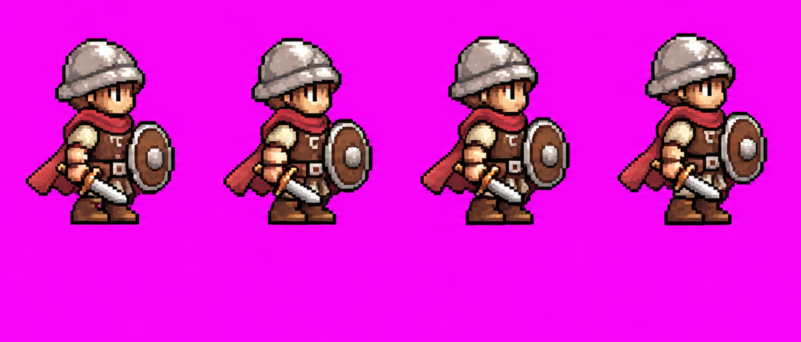
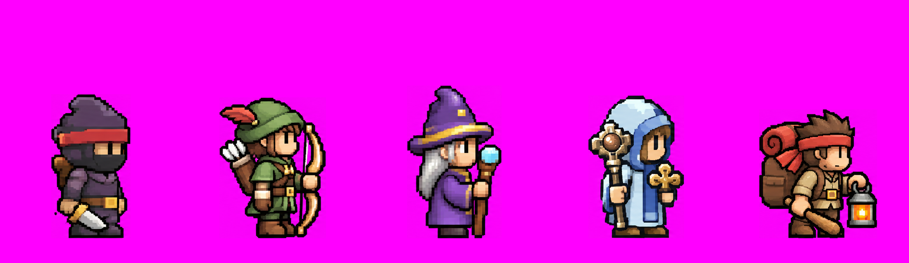

<title>모험가 통일 부탁</title>
<meta name="claude:viewport-fit-sides" content="cover">
<link rel="stylesheet" href="https://fonts.googleapis.com/css2?family=Do+Hyeon&family=IBM+Plex+Sans+KR:wght@400;600&display=swap">
<style>
/* 배치: 한 줄 흐름 — 머리 → 순서(번호: 실제 차례) → 붙일 그림 셋(그림 · 크게 보기 · 저장) → 부탁 글 넷(글 · 복사) → 받은 뒤 볼 것.
   색은 궁수 그림에서: 두건 초록 · 가죽 갈색 · 버클 금색. 그림은 밝은 회색 판 그대로 보인다 */
:root {
  --bg: #eeedf4; --surface: #f9f8fc; --panel: #dcd9e8; --fg: #1c1a26; --muted: #5a5770; --line: #c8c4d8;
  --accent: #8a2f2a; --accent-fg: #ffffff; --label: #7a5a0c; --sheet: #c8ccd6; --code: #f3f1f9;
  --font-display: "Do Hyeon", "Apple SD Gothic Neo", "Malgun Gothic", "Noto Sans KR", system-ui, sans-serif;
  --font-body: "IBM Plex Sans KR", "Apple SD Gothic Neo", "Malgun Gothic", "Noto Sans KR", system-ui, sans-serif;
  --font-data: ui-monospace, "SFMono-Regular", Menlo, Consolas, monospace;
}
@media (prefers-color-scheme: dark) { :root:not([data-theme="light"]) { --bg: #16151d; --surface: #1f1d29; --panel: #2e2b3c; --fg: #ebe7f2; --muted: #a39fb4; --line: #383548; --accent: #d0564c; --accent-fg: #ffffff; --label: #f0c45a; --sheet: #c8ccd6; --code: #1b1a24; color-scheme: dark } }
:root[data-theme="dark"] { --bg: #16151d; --surface: #1f1d29; --panel: #2e2b3c; --fg: #ebe7f2; --muted: #a39fb4; --line: #383548; --accent: #d0564c; --accent-fg: #ffffff; --label: #f0c45a; --sheet: #c8ccd6; --code: #1b1a24; color-scheme: dark }
*, *::before, *::after { box-sizing: border-box }
body { background: var(--bg); color: var(--fg); font-family: var(--font-body); font-size: 15px; line-height: 1.6; word-break: keep-all; overflow-wrap: break-word; padding-block: 28px 56px; padding-left: max(16px, env(safe-area-inset-left, 0px)); padding-right: max(16px, env(safe-area-inset-right, 0px)) }
.wrap { max-width: 820px; margin-inline: auto; display: grid; gap: 44px; grid-template-columns: minmax(0, 1fr) }
h1, h2, h3, p, ul, ol, figure, pre { margin: 0 }
ul, ol { padding: 0; list-style: none }
h1, h2 { font-family: var(--font-display); font-weight: 400; text-wrap: balance; line-height: 1.15 }
h1 { font-size: clamp(30px, 7vw, 42px) }
h2 { font-size: 24px }
h3 { font-size: 16px; font-weight: 600 }
.top { display: grid; gap: 10px }
.eyebrow { color: var(--label); font-size: 13px; font-weight: 600; letter-spacing: .04em }
.lede { max-width: 36em }
.sec { display: grid; gap: 18px; grid-template-columns: minmax(0, 1fr) }
.note { color: var(--muted); font-size: 14px; max-width: 44em }
.steps { counter-reset: n; display: grid; gap: 12px; max-width: 46em }
.steps li { counter-increment: n; padding-left: 34px; position: relative }
.steps li::before { content: counter(n); position: absolute; left: 0; top: 1px; width: 24px; height: 24px; display: grid; place-items: center; font: 400 15px/1 var(--font-display); background: var(--accent); color: var(--accent-fg); border-radius: 4px }
.item { display: grid; gap: 10px; grid-template-columns: minmax(0, 1fr) }
.item .what { display: grid; gap: 2px }
.row { display: flex; flex-wrap: wrap; gap: 8px; align-items: center }
.msg { color: var(--muted); font-size: 13px }
.msg:empty { display: none }
.btn { font: 600 14px/1 var(--font-body); padding: 11px 14px; border-radius: 6px; border: 1px solid var(--line); background: var(--surface); color: var(--fg); cursor: pointer }
.btn[aria-pressed="true"] { background: var(--fg); border-color: var(--fg); color: var(--bg) }
.btn.go { background: var(--accent); border-color: var(--accent); color: var(--accent-fg) }
.btn:disabled { opacity: .6; cursor: default }
.btn:focus-visible { outline: 2px solid var(--label); outline-offset: 2px }
.frame { overflow-x: auto; background: var(--sheet); border: 1px solid var(--line); border-radius: 8px }
.frame img { display: block; width: 100%; height: auto; image-rendering: pixelated }
.frame.zoomed img { width: var(--zw); max-width: none }
.frame.soft img { image-rendering: auto }
.attach { color: var(--label); font-size: 13px; font-weight: 600 }
.req { font: 13.5px/1.65 var(--font-body); white-space: pre-wrap; background: var(--code); border: 1px solid var(--line); border-radius: 8px; padding: 14px 16px; max-height: 22em; overflow: auto; -webkit-user-select: text; user-select: text }
.list { display: grid; gap: 10px; max-width: 46em }
.list li { padding-left: 18px; position: relative }
.list li::before { content: ""; position: absolute; left: 2px; top: .62em; width: 6px; height: 6px; background: var(--label) }

.mock { position: relative; width: 100%; aspect-ratio: 2172 / 724; container-type: inline-size; border: 2px solid #000; overflow: hidden; border-radius: 6px; background: #c9d6c2; }
.mock .b { position: absolute; left: 0; right: 0; display: flex; align-items: center; justify-content: center; text-align: center; font-size: 2.9cqw; line-height: 1.25; color: #f2f4e8; box-sizing: border-box; border-top: 1px dashed rgba(0, 0, 0, .45); padding: 0 1cqw; }
.pts { margin: 0; padding-left: 1.2em; display: grid; gap: 4px; }
</style>
<main class="wrap">
  <header class="top"><p class="eyebrow">미궁도시 라비린토스 · 모험가</p><h1>여섯 명을 전사 그림체로</h1><p class="lede">지금 전사의 디자인으로 여섯 직업을 통일하고, 묘사만 살짝 더 넣어 받는 부탁입니다. 그림 두 장을 붙이고 글 하나를 보내면 됩니다.</p></header>
  <section class="sec"><div class="what item"><h2>GPT에 붙일 그림 2장</h2><p class="note">새 대화에서 시작하는 편이 좋습니다. 앞의 시안들이 섞이지 않습니다.</p><p class="note" id="save-hint">저장 단추가 보이지 않으면 그림을 길게 눌러 저장해 주세요.</p></div>
    <div class="item"><div class="what"><h3>① 전사 (그림체 기준)</h3><p class="note">비율 · 도트 굵기 · 얼굴 · 외곽선을 이대로.</p></div><div class="frame" id="f-a"></div><div class="row"><button class="btn" type="button" data-zoom="f-a" aria-pressed="false">크게 보기</button><button class="btn go" type="button" data-save="ref_warrior_style.png" hidden>저장</button><span class="msg" role="status"></span></div></div>
    <div class="item"><div class="what"><h3>② 지금 다섯 명</h3><p class="note">왼쪽부터 도적 · 궁수 · 마법사 · 사제 · 짐꾼. 옷과 색, 든 물건만 따릅니다.</p></div><div class="frame" id="f-b"></div><div class="row"><button class="btn" type="button" data-zoom="f-b" aria-pressed="false">크게 보기</button><button class="btn go" type="button" data-save="ref_five_now.png" hidden>저장</button><span class="msg" role="status"></span></div></div>
  </section>
  <section class="sec"><div class="what item"><h2>부탁 글</h2></div>
    <div class="item"><div class="what"><h3>여섯 명 한 장</h3><p class="attach">붙일 그림: ① 전사 + ② 지금 다섯 명</p></div><pre class="req" id="req-1" tabindex="0">모험가 여섯 명 — 전사의 그림체로 통일 (한 장에 여섯 명, 가로 3칸 × 세로 2줄)

붙인 그림 두 장:
① 같은 게임의 전사 — 그림체의 기준입니다. 이 전사와 똑같은 그림체 · 비율 · 도트 굵기 · 명암 · 외곽선 · 얼굴 그리는 법으로 여섯 명을 그립니다.
② 지금 게임의 다섯 명 (왼쪽부터 도적 · 궁수 · 마법사 · 사제 · 짐꾼) — 누가 누구인지, 옷 · 색 · 든 물건의 기준. 그림체는 따르지 않습니다.

①의 전사와 한 줄로 세웠을 때 같은 사람이 그린 한 팀으로 보이게, 여섯 명을 그려 주세요. 다만 ①보다 묘사를 「살짝만」 더 넣습니다.

①에서 그대로 따를 것 (바꾸지 않는다)
· 비율: 머리가 큰 2.5등신, 둥글둥글한 몸, 짧은 팔다리, 큼직한 손발. 키를 키우거나 몸을 늘이지 않는다
· 얼굴: 둥근 옆얼굴에 세로로 긴 눈 하나. 코를 튀어나오게 그리지 않고, 입 · 수염 · 주름도 그리지 않는다(마법사의 긴 수염만 예외)
· 도트 굵기: ①과 같은 칸 크기 — 캐릭터 키가 도트 약 40칸. 더 잘게 쪼개지 않는다
· 외곽선: 어두운 도트 한 칸 굵기로 끊김 없이
· 방향 · 자세: 오른쪽을 보고 선 완전한 옆모습, 두 발로 편하게 선 ①과 같은 기본 자세

①보다 살짝 더할 것 (한 명에 두세 군데만)
· 쇠붙이(투구 · 방패 테 · 칼날 · 버클)에 밝은 빛 한 줄 — 위쪽에 또렷한 반짝임
· 옷과 갑옷에 이음매나 가죽끈 한두 줄, 허리띠의 버클, 작은 주머니 하나 정도
· 천(목도리 · 망토 · 로브 자락)에 주름 한두 줄
· 면마다 명암을 세 단계에서 네 단계로
· 이보다 더 넣지 않는다 — 자잘한 무늬 · 금실 장식 · 문양 · 리벳 줄은 넣지 않는다. 멀리서 봐도 덩어리가 먼저 읽혀야 한다

한 명씩 (윗줄 왼쪽부터 전사 · 도적 · 궁수 / 아랫줄 왼쪽부터 마법사 · 사제 · 짐꾼)
1. 전사 — ①의 전사 그대로(둥근 쇠 투구, 붉은 목도리, 갈색 가죽 갑옷, 한손검, 둥근 방패)에 위의 「살짝 더할 것」만 얹는다
2. 도적 — 짙은 보랏빛 두건과 복면, 붉은 머리띠, 어두운 가죽옷. 한 손에 단검
3. 궁수 — 붉은 깃 꽂은 초록 두건, 초록 가죽옷, 등에 화살통. 손에 긴 활
4. 마법사 — 금빛 띠를 두른 보라색 뾰족 모자와 보라색 로브, 긴 흰 수염의 노인. 푸른 구슬이 달린 나무 지팡이
5. 사제 — 하늘빛 두건 달린 긴 옷(푸른 계열 — 흰 옷으로 그리지 않는다), 금빛 둥근 머리 장식이 달린 긴 지팡이, 다른 손은 비워 둔다. 십자 · 더하기 모양 · 머리 위 빛 고리는 그리지 않는다
6. 짐꾼 — 붉은 머리띠를 맨 갈색 머리 청년, 베이지색 작업복, 등에 말아 올린 붉은 담요가 얹힌 큰 등짐, 한 손에 등불, 다른 손에 짧은 나무 몽둥이

규격
· 가로 3칸 × 세로 2줄, 여섯 칸. 가로 : 세로 = 3 : 2 (예: 1536 × 1024). 칸마다 한 명, 칸 가운데에, 머리 위와 발밑에 여백
· 여섯 명의 키와 머리 크기를 같게(짐꾼만 등짐 때문에 넓어도 됨), 발밑 높이를 칸 안에서 같게
· 두 팔 · 두 다리 · 두 발이 다 보이게, 앞뒤 팔다리가 겹쳐 뭉치지 않게
· 진짜 도트 그림: 칸이 또렷한 정사각형, 칸 사이를 흐리게 잇지 않는다. 점묘 · 바둑판 무늬 명암 없이
· 바탕은 단색 자홍 #FF00FF. 바닥 · 그림자 · 빛 · 효과 없이
· 글자 · 번호 · 이름표 없이. 캐릭터끼리 닿지 않게, 칸 밖으로 나가지 않게
· 다른 작품의 캐릭터를 닮지 않게</pre><div class="row"><button class="btn go" type="button" data-copy="req-1">글 복사</button><span class="msg" role="status"></span></div></div>
  </section>
  <section class="sec"><div class="what item"><h2>받은 뒤 볼 것</h2></div>
    <ul class="list"><li>첫 칸의 전사가 ①과 같은 사람으로 보이는지 — 키가 커지거나 코가 생겼으면 다시 받습니다.</li><li>나머지 다섯의 머리 크기 · 눈 · 도트 굵기가 전사와 같은지.</li><li>묘사가 「살짝」인지 — 무늬가 자잘하게 늘어 덩어리가 안 읽히면 과한 것입니다.</li><li>사제에 십자 모양이나 머리 위 빛 고리가 없는지.</li><li>바탕이 한 가지 자홍색인지.</li></ul>
  </section>
</main>
<script>
const $$ = s => Array.from(document.querySelectorAll(s));
const msgOf = b => b.parentElement.querySelector('.msg');
const W = { 'f-a': 1100, 'f-b': 2200 };
$$('[data-zoom]').forEach(b => { const f = document.getElementById(b.dataset.zoom); f.style.setProperty('--zw', W[b.dataset.zoom] + 'px');
  b.addEventListener('click', () => { const on = f.classList.toggle('zoomed'); b.setAttribute('aria-pressed', on ? 'true' : 'false'); }); });
// 글 복사: 안 되면 글을 골라 둔다
$$('[data-copy]').forEach(b => b.addEventListener('click', async () => {
  const pre = document.getElementById(b.dataset.copy), msg = msgOf(b);
  try { await navigator.clipboard.writeText(pre.textContent); msg.textContent = '복사했습니다.'; }
  catch (_) { const r = document.createRange(); r.selectNodeContents(pre); const s = window.getSelection(); s.removeAllRanges(); s.addRange(r); pre.focus(); msg.textContent = '여기서는 바로 복사가 안 됩니다. 글을 골라 두었으니 길게 눌러 복사해 주세요.'; }
}));
// 저장 (보는 쪽에서 저장을 받아 줄 때만 단추를 보인다)
(async () => {
  let dl = null;
  try { dl = window.claude && window.claude.use ? await window.claude.use('downloads') : null; } catch (_) { dl = null; }
  if (!dl) return;
  document.getElementById('save-hint').hidden = true;
  $$('[data-save]').forEach(b => { b.hidden = false; b.addEventListener('click', async () => {
    const msg = msgOf(b); b.disabled = true; msg.textContent = '';
    try { const blob = await (await fetch(b.dataset.save)).blob(); await dl.save({ filename: b.dataset.save, data: blob }); msg.textContent = '저장했습니다.'; }
    catch (e) { const c = e && e.code; msg.textContent = c === 'declined' ? '저장을 취소했습니다.' : c === 'rate_limited' ? '잠시 뒤에 다시 눌러 주세요.' : '여기서는 저장할 수 없습니다. 그림을 길게 눌러 저장해 주세요.'; }
    b.disabled = false; }); });
})();
</script>